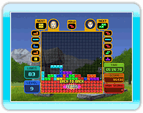

17 |
Multigiocatore |
 |
 Si gioca con le regole classiche di Tetris. Si gioca con le regole classiche di Tetris.Affronta un rivale e/o il computer eliminando le righe mentre cerchi di chiudere gli avversari in una situazione di stallo (game over). Vince il primo giocatore che ci riesce. Il numero di righe che elimini determina il numero di blocchi di penalità inviati nel campo di gioco degli avversari.
 Le regole classiche sono le stesse di "Scalatore". Le regole classiche sono le stesse di "Scalatore". Vinci se raggiungi per primo la meta o quando gli avversari non possono più continuare la partita. Ogni volta che un giocatore attraversa un checkpoint guadagna un "Calcia linea".
 Elimina le righe indicate in verde. Se elimini un tetramino sulla riga, le righe verdi retrostanti vengono eliminate. Vinci se elimini per primo tutte le righe o quando gli avversari non possono più continuare a giocare. Se giochi in squadra, quando un tuo compagno elimina una riga, viene eliminata la riga nella stessa posizione del tuo campo di gioco. Elimina le righe indicate in verde. Se elimini un tetramino sulla riga, le righe verdi retrostanti vengono eliminate. Vinci se elimini per primo tutte le righe o quando gli avversari non possono più continuare a giocare. Se giochi in squadra, quando un tuo compagno elimina una riga, viene eliminata la riga nella stessa posizione del tuo campo di gioco.
Le regole classiche sono le stesse usate in "Ombra".
Vince il giocatore con il completamento maggiore al termine del gioco o quello che raggiunge un livello di completamento del 100%. Quel giocatore viene immediatamente dichiarato vincitore.
 Le regole classiche sono le stesse di "Scalatore". Le regole classiche sono le stesse di "Scalatore".Vinci se raggiungi per primo la meta o quando gli avversari non possono più continuare a giocare.
Gioco in cui i due partecipanti collaborano per eliminare le righe su un campo di gioco di larghezza doppia rispetto a un campo normale (20 blocchi).
I tetramini che entrano sul campo di gioco sono diversi per il G1 e il G2. Per il resto valgono le regole classiche di Tetris. Il G1 e il G2 condividono l'"Hold".
 Gara a due giocatori disputata su un campo di larghezza doppia rispetto al normale (20 blocchi).
Gara a due giocatori disputata su un campo di larghezza doppia rispetto al normale (20 blocchi). Le regole sono diverse dalle regole classiche di Tetris: i giocatori fanno a gara a chi racchiude più spazio con i tetramini (anche i tetramini stessi contano come spazio). I giocatori a turno controllano un tetramino. Chi chiude un'area con un tetramino vince lo spazio. Al termine della partita, chi ha l'area totale maggiore viene dichiarato vincitore.
|

 |
 |
 |